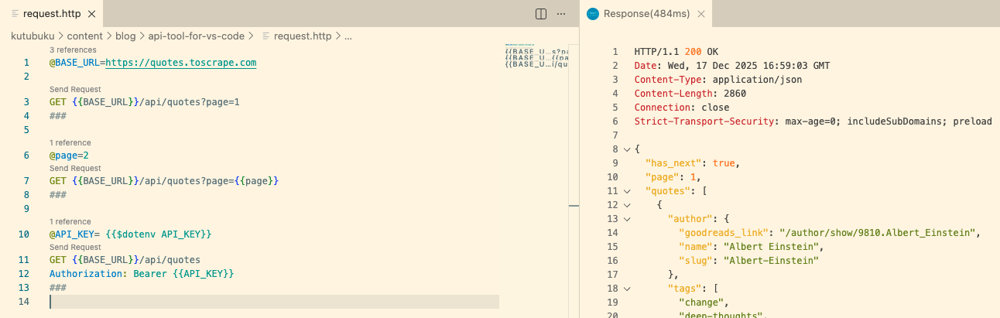

If you're using VS Code and need to test APIs or to make HTTP requests quickly without juggling curl commands, browser tabs, Postman, or Bruno? The extension "REST Client" by Huachao Mao, lets you just that with a single, text-based workflow within VS Code.
This extension lets you send HTTP requests directly from a plain text file in VS Code. The requests are in a simple syntax and execute with just click "Send Request" above the request line. In addition to that as everything is in text files, we can easily version control our API requests alongside our code.
This how it looks like in action 🎬:

To start using it, first download the extension from the VS Code marketplace, search for "REST Client" by Huachao Mao and install it.
Then create a text file with a .http or .rest extension.
The syntax is straightforward with first line being the HTTP method and URL, followed by optional headers and body.
The request is ended with a line containing only ###.
For example, to make a GET request to fetch quotes from an API, you can write:
GET https://api.example.com/quotes?page=1
###
You can also define a variable for the base URL and page number. This is handy when you want to make multiple requests to the same API but with different paths or parameters.
@BASE_URL = https://api.example.com
@page = 1
GET {{BASE_URL}}/quotes?page={{page}}
###
Last but not least, you can use API keys stored in environment files (.env) 🔐.
@API_KEY= {{$dotenv API_KEY}}
GET {{BASE_URL}}/quotes
Authorization: Bearer {{API_KEY}}
###
The REST Client extension provides a lightweight tool for anyone working with HTTP directly in VS Code. It can streamline your workflow by keeping everything in one place, easy to version control and share with your team.